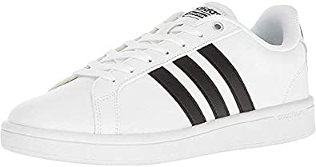

Case Study between Google Lens and MobileNet
-
Test Image:

-
Test Image:

-
Test Image:

-
Test Image:

-
Test Image:
Result from MobileNet: Loudspeaker, speaker, speaker unit
Result from Google Lens: Fujifilm Instax Mini 11
Result:
Google Lens was more accurate.
Result from MobileNet: Papertowel
Result from Google Lens: Jolly wild conker Notebook
Result:
Google Lens is more accurate.
Result from MobileNet: Pencil, rubber eraser
Result from Google Lens: Pencil
Result:
Google lens and MobileNet are both equally accurate.
Result from MobileNet: Microphone, mike
Result from Google Lens: Adidas sneakers
Result:
Google Lens is more accurate.
Result from MobileNet: Teddy, teddybear
Result from Google Lens: Teddy Bear
Result:
Google Lens and MobileNet are both equally accurate.
Conclusion:
After testing five images, I've found that Google Lens was more accurate. MobileNet indentified the images correctly, two times. Google Lens was able to correctly identify the images, all five times.
In conclusion, Google Lens is more accurate than MobileNet.